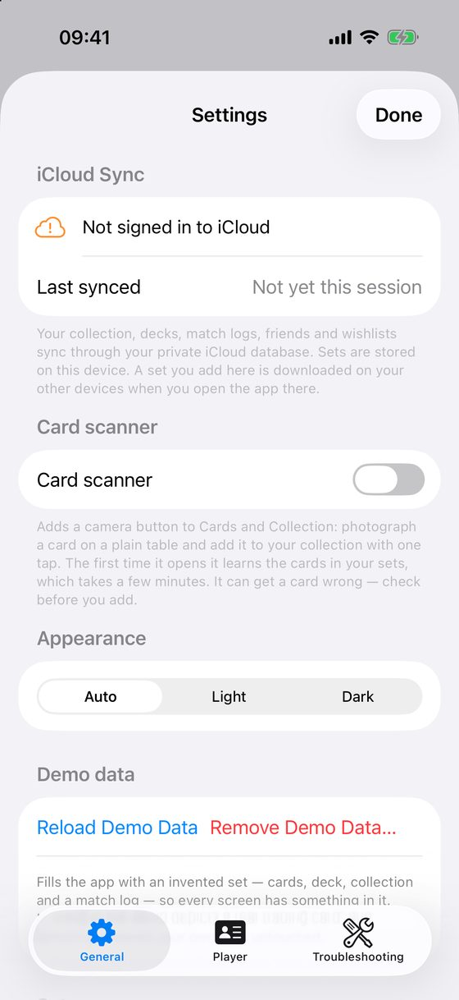

Your devices and your backups
Your cards are safe. Your collection, decks, wishlists, match logs and friends are kept in your own iCloud, and the app syncs them between your devices. There is no account to make, and we never see your data.
What syncs, and what does not
- Syncs through iCloud: your collection, decks, wishlists, match logs, friends, and your player details.
- Does not go through iCloud: the card data and pictures of your sets. They are large, so each device downloads them itself from TCGdex.
Both devices must be signed in to the same Apple Account, with iCloud on. Syncing can take a few minutes. Settings ▸ General ▸ iCloud Sync shows whether it is working.
Set up a second device
- Install the app and open it. Skip the welcome guide or read it.
- Wait a few minutes. Your collection and decks appear.
- The app remembers which sets you added on your other devices. On Wi-Fi, it downloads them by itself, and Cards and Manage Sets show Downloading 2 sets from your other devices…. Stop halts it.
On mobile data, or with Low Data Mode on, nothing downloads by itself. A banner says that sets from your other devices are not on this device yet. Tap Download to get them now, or Not Now to wait.
If you add a set on your Mac, it downloads on your iPhone the next time you open the app there on Wi-Fi. To turn this off, go to Settings ▸ General and switch off Download sets from my other devices.
If you remove a set on one device, your other devices keep their copy. Nothing is ever deleted on another device by itself.

Backups on a Mac
iCloud already keeps a copy of your collection. On a Mac you can also keep a backup file of your own.
A backup is one file with your collection, decks, match logs and a few settings. It does not include your sets or their pictures. Add the sets again in Manage Sets after a restore.
- Choose Deck & Collect ▸ Settings… and open the Backup tab.
- Tap Choose… and pick a folder for your backups.
- Tap Create Backup Now.
- To make them regularly, turn on Back up automatically and choose how often under Every. This only runs while the app is open.
Restore a backup
- On the Backup tab, tap Restore Backup… and pick the file.
- Read the warning. A restore replaces your current collection, decks and match logs with the contents of the file.
- Tap Replace My Data. The app first saves a copy of what is there now in the backup folder, and if the restore fails nothing changes.
iPhone and iPad have no Backup tab. Their copy is the one in iCloud.
Optional, Mac only: an AI assistant
The Mac app can let an AI assistant on the same Mac read and update your collection, decks and match logs. It is off by default and open only to your Mac. Turn it on under Settings ▸ AI only if you want it, because an assistant that is connected can read and change your data.